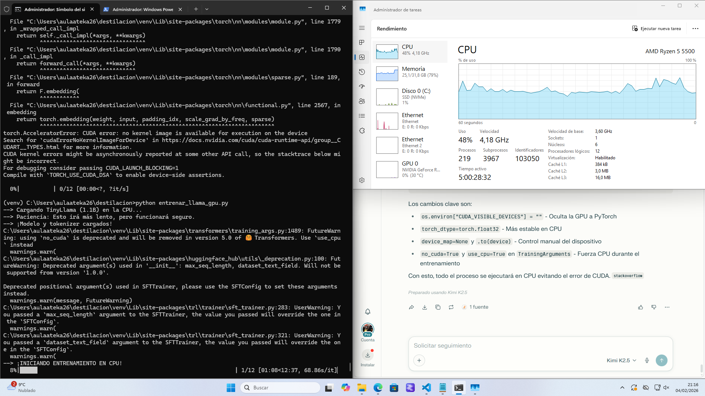

1. ¿Qué es la destilación?
La destilación de conocimiento es una técnica para entrenar un modelo pequeño (estudiante) a partir de un modelo grande (profesor). El estudiante aprende a imitar las salidas del profesor, conservando gran parte de su rendimiento pero con menor peso y coste de ejecución. [file:94]
En esta práctica se ha trabajado con modelos de lenguaje en Windows 11, cargando un modelo grande y destilándolo a un modelo pequeño entrenado en CPU, debido a problemas de compatibilidad con la GPU. [file:94]
2. Captura del entrenamiento de la destilación
La siguiente imagen muestra una captura real del entrenamiento del modelo estudiante en CPU: a la izquierda la consola ejecutando el script y a la derecha el uso de CPU en el Administrador de tareas de Windows.

3. Preparación del entorno y errores típicos
3.1 Creación del entorno virtual
# Crear y activar el entorno virtual
python -m venv venv
venv\Scripts\activate
# Actualizar pip
pip install --upgrade pip3.2 Instalar PyTorch en CPU (evitar errores de CUDA)
Al inicio aparecían mensajes como
CUDA error: no kernel image is available for execution on the device
y avisos de que la GPU RTX 5060 Ti no era compatible con la versión de PyTorch instalada.
Se decidió instalar PyTorch sólo para CPU. [web:0]
# Instalar PyTorch sólo CPU
pip install torch torchvision torchaudio --index-url https://download.pytorch.org/whl/cpuNVIDIA GeForce RTX 5060 Ti ... is not compatible.
Solución: usar la versión CPU de PyTorch y forzar el entrenamiento en CPU.
3.3 PyTorch no carga sus DLL
En un momento la importación de torch fallaba por problemas al cargar DLLs
dentro del entorno virtual. Se arregló desinstalando e instalando de nuevo PyTorch CPU. [web:0]
# Eliminar instalación dañada
pip uninstall torch torchvision torchaudio -y
# Volver a instalar versión CPU estable
pip install torch torchvision torchaudio --index-url https://download.pytorch.org/whl/cpu4. TinyLlama, TRL y errores con SFTTrainer
4.1 Cargar TinyLlama y su tokenizador en CPU
from transformers import AutoModelForCausalLM, AutoTokenizer
import torch, os
# Ocultar la GPU
os.environ["CUDA_VISIBLE_DEVICES"] = ""
model_name = "TinyLlama/TinyLlama-1.1B-Chat-v1.0"
model = AutoModelForCausalLM.from_pretrained(
model_name,
torch_dtype=torch.float32,
device_map=None,
).to("cpu")
tokenizer = AutoTokenizer.from_pretrained(model_name)
if tokenizer.pad_token is None:
tokenizer.pad_token = tokenizer.eos_tokenCUDA_VISIBLE_DEVICES="", desactivando no_cuda y moviendo
explícitamente el modelo a cpu.
4.2 Incompatibilidades con TRL y parámetros de SFTTrainer
Al usar SFTTrainer de la librería trl aparecieron varios errores:
TypeError: Trainer.__init__() got an unexpected keyword argument 'tokenizer'TypeError: SFTTrainer.__init__() got an unexpected keyword argument 'processing_class'- Advertencias sobre argumentos obsoletos:
max_seq_length,dataset_text_field, etc.
Estos errores se debían a cambios de API entre versiones de trl y
transformers. La solución fue fijar versiones compatibles
(transformers==4.41.2, trl==0.11.3, peft==0.11.1)
y usar la firma que admite tokenizer=... dentro de SFTTrainer. [file:94]
pip install "transformers==4.41.2" "trl==0.11.3" "peft==0.11.1" datasets acceleratefrom trl import SFTTrainer
from transformers import TrainingArguments
from datasets import load_dataset
dataset = load_dataset("imdb", split="train[:100]")
def format_text(example):
text = example["text"]
example["text"] = (
"<|system|>Eres un asistente útil.<|end|>"
f"<|user|>{text}<|end|>"
"<|assistant|>Respuesta.<|end|>"
)
return example
dataset = dataset.map(format_text)
training_args = TrainingArguments(
output_dir="./output",
per_device_train_batch_size=1,
gradient_accumulation_steps=8,
num_train_epochs=1,
logging_steps=10,
save_steps=50,
save_total_limit=2,
no_cuda=True, # fuerza CPU
report_to="none",
)
trainer = SFTTrainer(
model=model,
train_dataset=dataset,
args=training_args,
tokenizer=tokenizer,
max_seq_length=512,
dataset_text_field="text",
)trl que esperaba
processing_class en lugar de tokenizer, o viceversa.
Se estabilizó la práctica fijando una combinación de versiones donde la firma fuera
consistente y las advertencias sólo fueran de deprecación, no errores.
5. Entrenamiento del modelo estudiante en CPU
Resueltos los errores de entorno y de versiones, el entrenamiento del modelo estudiante se pudo iniciar correctamente en CPU:
print("--> ¡INICIANDO ENTRENAMIENTO EN CPU!")
trainer.train()
trainer.save_model("./tinyllama-1.1b-finetuned")
tokenizer.save_pretrained("./tinyllama-1.1b-finetuned")
print("--> Entrenamiento completado")6. Medir la divergencia KL entre profesor y estudiante
Para verificar que el modelo pequeño ha sido destilado del grande, se puede medir la divergencia KL entre sus distribuciones de salida sobre un conjunto de frases de prueba. Es importante que ambos modelos compartan el mismo tokenizador. [file:94]
import torch
import torch.nn.functional as F
def medir_kl(teacher_model, student_model, tokenizer, textos):
teacher_model.eval()
student_model.eval()
total_kl = 0.0
n = 0
for texto in textos:
inputs = tokenizer(
texto,
return_tensors="pt",
truncation=True,
padding="max_length",
)
with torch.no_grad():
out_teacher = teacher_model(**inputs)
out_student = student_model(**inputs)
p_teacher = F.softmax(out_teacher.logits, dim=-1)
log_p_student = F.log_softmax(out_student.logits, dim=-1)
kl = F.kl_div(
log_p_student,
p_teacher,
reduction="batchmean",
)
total_kl += kl.item()
n += 1
return total_kl / max(n, 1)
# Ejemplo de uso
textos_prueba = [
"This movie was amazing!",
"I hated this film, it was terrible.",
"The plot was okay but the acting was great.",
]
kl_media = medir_kl(teacher_model, student_model, tokenizer, textos_prueba)
print("Divergencia KL media:", kl_media)7. Resumen de la práctica
- Se creó un entorno virtual y se instaló PyTorch CPU para evitar errores de CUDA.
- Se fijaron versiones compatibles de
transformers,trlypeft. - Se entrenó un modelo estudiante pequeño en CPU usando
SFTTrainer. - Se añadió un script de divergencia KL para comprobar la similitud entre profesor y estudiante.
- La captura incluida documenta el entrenamiento real realizado en esta destilación.